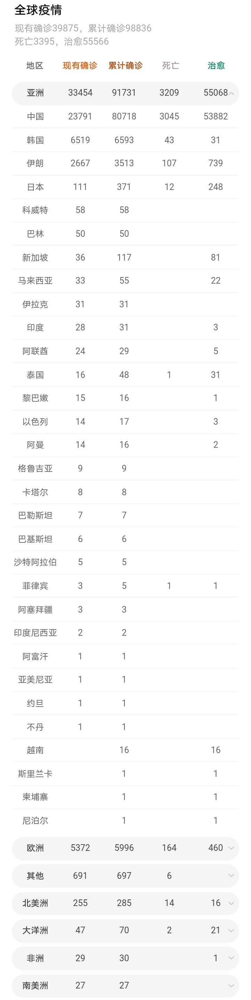
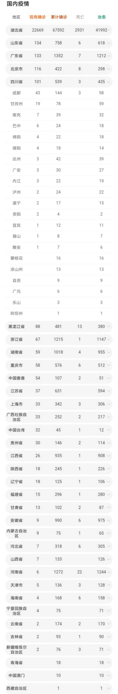
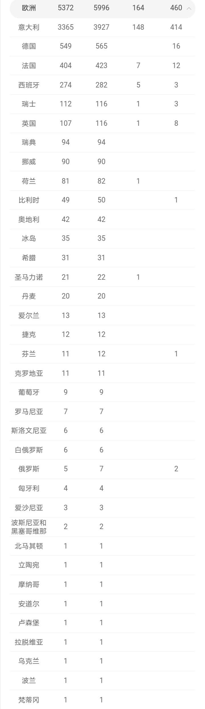

3.6疫情统计（全球 欧洲 中国）洗手液选择

我们日常生活中经常听到洗手液的作用是抗菌消毒，但抗菌消毒并不等同于抗病毒。
宣传自己能够抗病毒的洗手液，实际上大都是具有抗菌性的洗手液（比如含有PCMX，三氯生等成分）。且不说抗菌性的洗手液之前已经被FDA认为有可能使皮肤微生态紊乱。就说细菌和病毒的结构，相差也比较大，比如有些防腐剂是通过破坏细菌的细胞壁来抑菌的，但病毒连细胞壁都没有，又怎么能“杀毒”？
所以，对细菌有用的成分，不一定对新型冠状病毒有效。且目前并没有直接的科研证据表明这类抗菌性洗手液对新型冠状病毒有类似的抑制效果。
各种研究结果表明抗菌皂和单纯用流水清洗的效果差不多，而含酒精的洗手类产品效果相对好点，酒精浓度越高效果越好。
注：医用酒精75%是针对细菌最为合适的浓度，渗透压与细菌类似，水分和酒精可以以相对稳定的速度进入细菌内部，使细菌蛋白质变性。
一般含酒精多都是免洗洗手液，比如威露士、滴露等。推荐免洗洗手液，因为酒精含量相对较高（比较接近专家建议的75%）。
总之，疫情期间，在洗手方面，应经常用肥皂和流动水清洗双手，每次至少 15 秒。如果没有肥皂和清水，使用含酒精的洗手液产品也是个不错的选择，至于抗不抗菌的就不用在意了。


- 上一篇：冠状病毒存活体内37天，塑料3天，包裹有毒？如何杀“毒” 2020/3/19
- 下一篇：新型冠状病毒耐热----2020.2.12病毒最新进展（数据 2020/2/12